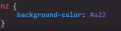

Esta propiedad esta especializada en definir las caracteristicas del fondo de la paguina, para ajustarse a cualquier situación cunesta con una serie de bariantes las cuales son:
background-color
-
Esta propieddad permite definir el color del fondo de la paguina web, Esta propiedad acepta multiples formatos de color colo lo son:
- Palabras clave
- Colores del sistema
- RGB hexadecimal
- RGB numérico
- RGB porcentual
Ejmeplo

Valor Inherit
Se trata de un valor especial de la propiedad background, su función es simple, este valor indica que el elemento debe "heredar" el color de fondo del contendor en el que se encuentra, de ese modo tanto el elemento padre como el hijo tendra exactamente el mimo color.
Codigo
Resultado
Background-image
-
Esta propiedad permite el insertar una imagen en el fonde de la paguina, esta en si es la unica función de esta propiedad, para realizar esto es necesario incluir el valor url junto con la ruta hacia la imagen entre parentesis, de la siguiente forma:
Background-zise
-
Esta propiedad se centra en definir las dimenciones que se le daran a la imagen traido por background-image, para lo cual cuanta con multiples valores:
-
Porcentajes: De esta forma se define que la imagen ocupe un porcentaje del contenedor en el que se encuantra, puede ser declarado un unico valor que se aplicara para toda la imagen o tambien se pueden declarar dos valores diferentes, uno referente al eje X y otro para el eje Y, de la siguite manera
-
Cover: Este valor defiene que la imagen debe ajustarse a las dimenciones del contenedor parcialmte
-
Contain: Este valor define que la imagen se ajuste a las dimenciones del contendor pero manteniendo las resoluciones originales, con la peculiaridad de que en el caso de que exista espcio basio en el contenedor la imagen se repetira para llenar ese spacio.
Background-repeat
-
Esta propiedad define el si la imagen se repetira y por lo tanto unicamte posee dos valores :
Repeat: Define que la imagen si se repetira para rellenar cualqueer espacio libre en su contenedor
No-rpeat Define que la imagen no se repetira para rrellenar el contendor en caso de que sobren espacios libres
Nota: Esta propiedad se puede usar para que la imagen no se repita al emplear la propiedad "background-zise" con un valor "contain", de ese modo el espacio sobrante en el contenedor sera rellanado por el "background-color" que puede que se utilise en el fondo de este.
Background-clip
-
Esta propiedad permite cortar la imagen, para definir cual sección de la imagen sera cortada, posee varios valores:
-
border-box: Se trata del valor por defecto, recorta el area de la imagen que se encuentra en los bordes del elemento
padding-box; Recorta el area de la imagen que se encuenta en el padding del elemento
-
content-box: Recorta toda el area de la imagen que se encuentre fuera del area del contenido del elemento
Background-origin
-
Esta propiedad define que las dimenciones de la imagen se ajusten para mostrarse dentro de las areas establecidas del elemento.
-
border-box: Se trata del valor por defecto, Define que la imagen se muestre desde los bordes del elemento
padding-box; Define que la imagen se muestre desde dentro del area del padding
-
content-box: Define que la imagen se muestre unicamente desde dentro del area de contenido del elemento
Nota: La diferencia entre background-clip y background-origin es que background-clip recorta la imagen, mientras que background-origin la genera desde el punto establecido.
Background-position
-
Esta propiedad permite ubicar la imagen en alguna de las cuatro esquienas del contendor o en el centro de este, para hacerlo esta propiedad necesita de dos valores, el primero referente al eje X y el segundo referente al eje Y, por lo tanto posee los valores:
Left top: La imagen se posiciona a la izquierda y arriba
left bottom: La imagen se posiciona a la izquierda y abajo
Left center: La imagen se posiciona a la izquierda y el cantro
Right top: La imagen se posiciona a la derecha y arriba
Right bottom: La imagen se posiciona a la derecha y a abajo
Right center: La imagen se posiciona a la derecha y el centro
Center top: La imagen se posiciona en el cantro y arriba
Center bottom: La imagen se posiciona en el centro y abajo
Center center: La imagen se posiciona en el centro del contenedor
Ejemplo
background-attachment
Esta propiedad define a que elemento tomara la imagen como referencia para ubicarse, puede ser el contendor en el que se encuenta (visualizar de forma normal) o el viewport de la paguina, en cuyo caso la imagen se ubica en el fono del viewport pero el contendor de la imagen actua como una ventana a esta.
Esta propiedad posee dos valores posibles:
Scroll: Define que la imagen se puede desplazar y este ubicada de forma normal en su respectivo contenedor
Fixed: Define que la imagen se ubique anclada en el viewport y el contendor actua como una ventana que se desplaza conforme el usuario se mueve por la paguina